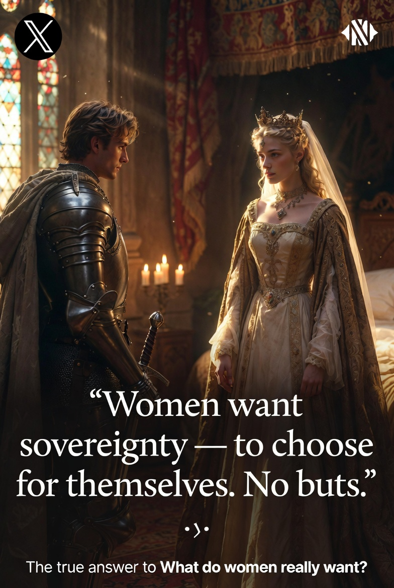

King Arthur's life depends on it. His advisors give long "but…" lists.
Lancelot goes to the witch.
She answers: Women want sovereignty — to choose for themselves. No buts.

The moment of sovereignty
The Wedding Night Twist
On the wedding night she offers: ugly by day/hot by night, or hot by day/ugly by night?
Lancelot: "It's your choice. Whatever you want."
→ She stays beautiful forever.
"BUT remember! Every beautiful woman has a witch inside if she doesn't get sovereignty."